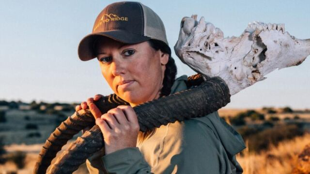
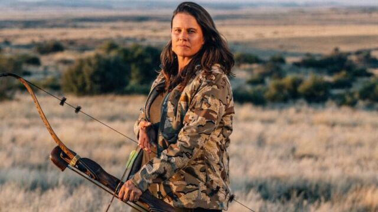
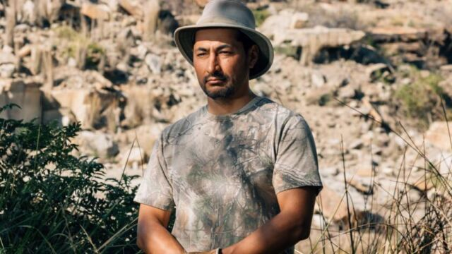
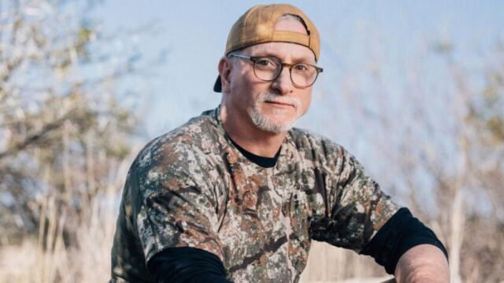
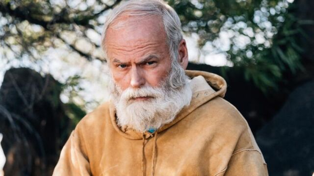
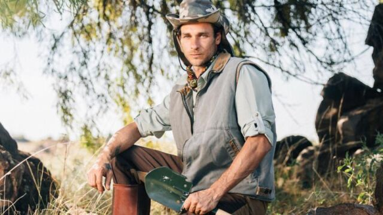
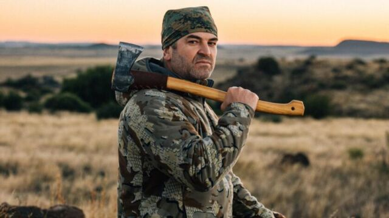
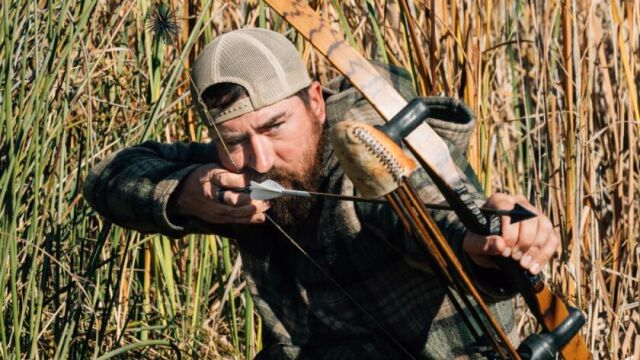
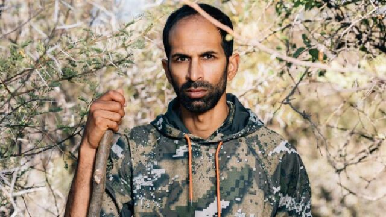

1stWinner
1stWinnerNathan Olsen
Tech Ceo
- Lasted
- 34 days
- Age
- 52
- From
- Buhl, Idaho
Loadout
- Cook pot
- Canteen
- Leatherman
- Knife
- Bow and Arrows
- Fishing Gear
- Blanket
- Salt
- Soap
- Ferro rod
Alone
Africa · Great Karoo Desert, South Africa · Premiered 12 Jun 2025
Days each survivalist lasted, in finishing order, and why they tapped out. Every season page uses the same 0–100 day scale so seasons can be compared at a glance.









Who they are, where they're from and the ten items they carried in.
1stWinnerTech Ceo
Loadout
Horse Trainer
Loadout
Survival Skills Instructor & Mentor
Loadout
Homesteader/Railroad Maintenance
Loadout
User Experience Designer
Loadout
Primitive Technology Instructor
Loadout
Exotic Animal Rancher/Fabricator
Loadout
Video Editor
Loadout
Carpenter
Loadout
Outdoor Educator
Loadout
How many survivalists chose each item (items grouped into simplified categories).
Air dates, survivalists remaining at the start of each episode, viewers and IMDb rating.
| Ep | Title & opening quote | Aired | Remaining | Viewers (M) | IMDb |
|---|---|---|---|---|---|
| 1 | The Land of Great Thirst“I see my path, but I don't know where it leads. Not knowing where I'm going is what inspires me to travel it.” — Rosalia de Castro | 12 Jun 2025 | 10 | 0.50 | |
| 2 | Best Laid Plans“Things are not always as they seem; the first appearance deceives many.” — Phaedrus | 19 Jun 2025 | 9 | 0.47 | |
| 3 | Thirst Trap“We never know the worth of water till the well is dry.” — Thomas Fuller | 26 Jun 2025 | 8 | 0.48 | |
| 4 | Finding a Foothold“Life can only be understood backwards but it must be lived forwards.” — Soren Kierkegaard | 10 Jul 2025 | 6 | 0.50 | |
| 5 | The Tempest“When you come out of the storm, you won't be the same person who walked in.” — Haruki Murakami | 17 Jul 2025 | 6 | 0.44 | |
| 6 | Purpose“The two most important days in your life are the day you are born and the day you find out why.” — Mark Twain | 24 Jul 2025 | 5 | 0.46 | |
| 7 | Echoes of Emptiness“The universe will reward you for taking risks on its behalf.” — Shakti Gawain | 31 Jul 2025 | 4 | 0.44 | |
| 8 | Weak Spot“What stands in the way becomes the way.” — Marcus Aurelius | 7 Aug 2025 | 3 | 0.42 | |
| 9 | The Promised Land“The greatest glory in living lies not in never falling, but in rising every time we fall” — Nelson Mandela | 14 Aug 2025 | 3 | 0.52 | |
| 10 | No Regrats“It's never too late to be who you might have been.” — George Eliot | 21 Aug 2025 | 3 | 0.49 |